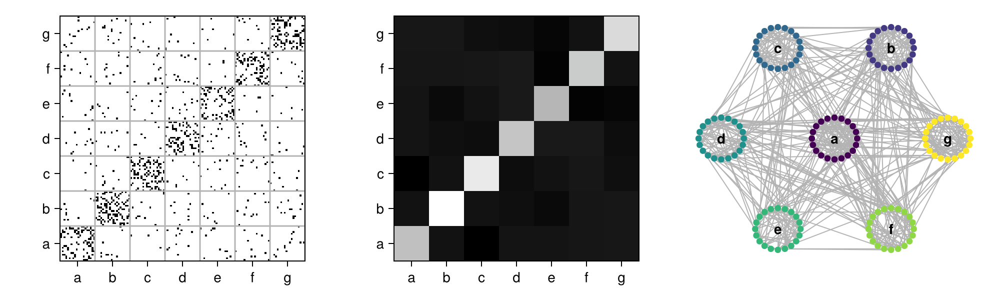

Introduction
BlockmodelUtils.jl is a Julia package to represent, analyse, and plot network blockmodels, i.e., blocked graph adjacency matrices according to some node partition. As of now, this package does not contain functionality to infer node partitions from network structure (i.e., clusters or equivalence-based partitions). Its main purpose is instead to provide a simple representation of blockmodels and some plotting utilities.
Installation
To install this package, enter the package manager at the REPL by pressing ] and write add BlockmodelUtils.
Plotting utilities are provided by a package extension using the Makie.jl ecosystem, so to use them you will also have to install one of the Makie backends, e.g. CairoMakie.
Getting started
For a graph g and a vector of group labels groups, create a blockmodel with the blockmodel function:
using Graphs, BlockmodelUtils
# create a random graph and node partition
n = 20
g = erdos_renyi(n, 0.1)
groups = rand('a':'d', n)
# create the blockmodel
bm = blockmodel(g, groups)The resulting Blockmodel prints the blockdensity matrix:
Blockmodel{Int64, SimpleGraph{Int64}}
4 groups with sizes [6, 7, 4, 3]
┌───┬───────┬───────┬───────┬───────┐
│ │ 1 │ 2 │ 3 │ 4 │
├───┼───────┼───────┼───────┼───────┤
│ a │ 0.200 │ 0.214 │ 0.250 │ 0.278 │
├───┼───────┼───────┼───────┼───────┤
│ b │ 0.214 │ 0.095 │ 0.179 │ 0.286 │
├───┼───────┼───────┼───────┼───────┤
│ c │ 0.250 │ 0.179 │ 0.167 │ 0.083 │
├───┼───────┼───────┼───────┼───────┤
│ d │ 0.278 │ 0.286 │ 0.083 │ 0.000 │
└───┴───────┴───────┴───────┴───────┘Plotting
The package contains an extension for Makie.jl to plot blockmodels in a variety of ways. Here's an example showcasing the three available functions permuteplot, densityplot and flowerplot:
using Graphs
using BlockmodelUtils
using CairoMakie
n_groups, s_groups = 7, 20
g = stochastic_block_model(5.0, 0.5, fill(s_groups, n_groups))
groups = repeat('a':'g'; inner=s_groups)
bm = blockmodel(g, groups)
fig = Figure(size=(1000, 300));
ax1 = Axis(fig[1,1])
ax2 = Axis(fig[1,2])
ax3 = Axis(fig[1,3])
permuteplot!(ax1, bm; linecolor=:grey70, framecolor=:black)
densityplot!(ax2, bm; colormap=:greys)
flowerplot!(ax3, bm; nodecolor=coalesce.(indexin(groups, 'a':'g')))
fig